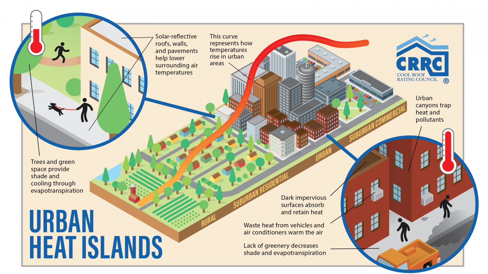

8 Urban Heat Island
This week we look into the Urban Heat Island Effect, policies to combat it across the world how we can use remote sensing techniques to predict, prevent and protect.
8.1 Application
8.1.1 The General Situation, What is it?
The impacts of the Urban Heat Island (UHI) effect have been difficult to ignore in recent years. Alongside rising global temperatures, higher temperatures experienced in urban areas pose a serious risk toward the health and wellbeing of urban populations. In the UK, the five-day heat wave in July 2022 was associated with 2,800 deaths in over-65s across the country as temperatures rose as high as 40C in central London.
There are various factors that contributes to UHI:
High density buildings in the urban core that replaced natural covers such as trees and natural water feature drastically reduce cities’ capacity to increase their albedo.
Dark impermeable surfaces such as tarmac roads and black roofs contributes to overheating as dark colours only absorb the heat, instead of reflecting it elsewhere.
Feedback Loop: the hotter it gets, the more energy cities will use to cool itself down. This means frequent uses of air conditioners which, in the process of generating cool air, is actively pumping out hot air onto the streets.
8.2 What are the impacts?
8.2.1 Economic
Estrada, Botzen, and Tol (2017) estimated the % lost from UHI in each GHG level scenario. The lowest GHG scenario still predicts 0.71% to be lost in 2050
8.2.2 Environmental
Mentioned briefly above, the hotter it is, the more energy requires to keep people cool. Santamouris et al. (2015) found that each degree of ambient temperature rise increases the peak electricity load around 0.45 and 4.6%. Also taking into account that many countries rely on oil and gas suppliers to supply energy. And from what we experienced (and experiencing) with the geopolitics with Russia, this is bad news for the environment and the wallet.
8.3 Global Policies
Global policies like the New Urban Agenda, Sustainable Development Goals, COP26 (which is now funded by oil tycoons!) all have general references to the UHI problem, however these global framework are often vague. Which in a way is fair enough because it needs to be applicable for all nations across economic strengths and different infrastructures. These documents are also often extremely long, so not very user friendly either. But this means the responsibility falls onto nation states and city level governments.
8.4 Local Policies
| Place | Strategy | Outcomes |
|---|---|---|
| Barcelona | Superblock | Increased footfall and consumption, less pollutants, less cars, a lively walkable neigbourhood |
| Medellin | Green Corridors | transformed undefined spaces that encouraged anti-social behaviours into welcoming spaces, increase quality of life, general cooling effect– but not near where people live… |
| Sydney Western Suburbs | Turn Down the Heat Strategy | The first real guide from a city level that highlights the need to address UHI. But provided no specifics. Yes we need to mitigate and prevent, but where? how? how much? who? |
| Baltimore | tree vouchers | This pushes the responsibilities towards city dwellers, when in fact large scale top down policies needs to be enforced by the government |
| Fremantle | Urban forest Plan | yay for data driven policy! But they only used 1 month’s data. Really should be using aggregate. |
| Perth Met Area | 1955 requirement for 10% of open space | Open space != green space… |
8.2.3 Social: The already disadvantaged gets it the worst
Harlan et al. (2013) conducted a comprehensive study identifying social and environmental predictors of heat vulnerability in Arizona. The study found deprived areas, especially those with majority black populations and areas of spatial deprivation , where dwellings are considered overcrowded, are particularly vulnerable to heat-related deaths.
Often, it is exactly these poor urban areas that have the least access to green and blue covers and further away from hospitals for medical assistance Prosdocimi and Klima (2020) found that risk of death is increased by 1.02% per km of distance. Hello redlining!